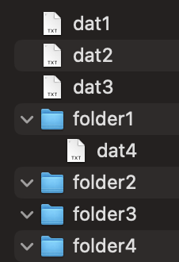

It is necessary to implement the FileVisitorWordCounterAndSorter class, which implements the FileVisitor<Path> interface so that it visits the given directory and its subdirectories and performs the following actions:
FileVisitorWordCounterAndSorter class is repeated in the .txt files of each directory. The total number of repetitions of the searched word in all .txt files of a certain directory is printed to the standard output in the following format:
<file_location_path> = <total_number_of_repeats>FileVisitorWordCounterAndSorter class should additionally implement the public void copyToSortedFilesFolder(String sortedFilesFolderPath) method, which copies all found .txt files after executing the Files.walkFileTree method to a directory whose path is given as an argument, in such a way that the content of each file remains same as in the original file, but the files need to be renamed so that their name is the corresponding sequence number of the file size, so that all files in that directory are sorted by their size. So the largest file will be called 1.txt, the second largest 2.txt, etc. Additionally, assume that this method must be called, and that it is called only once, after each call of the Files.walkFileTree method.The word to be searched is passed as an argument to the constructor of the FileVisitorWordCounterAndSorter class and is set as the value of the searchedWord private attribute. It is necessary to ensure that its value can be retrieved and changed later. If the destination directory passed as an argument to the copyToSortedFilesFolder(String sortedFilesFolderPath) method does not exist, it must be created.
Example:
If the implemented FileVisitor searches a directory that has the following structure:

and when creating an instance of the FileVisitorWordCounterAndSorter class, the constructor was given the requested word "pass" which appears in the files dat1.txt, dat2.txt, dat3.txt a total of 7 times, and in the file dat4.txt 0 times, standard output should look like this:
/res/oopExam = 7
/res/oopExam/folder1 = 0
If in the same case the file sizes are in the following order (from largest to smallest): dat3.txt, dat4.txt, dat2.txt, dat1.txt, then by calling the method copyToSortedFilesFolder("/res/oopIspit/") in the directory /res/oopIspit/ writes to the file 1.txt the contents of the file dat3.txt, to the file 2.txt the contents of the file dat4.txt, etc.
Additional note:
File class, but only Path and java.nio package.